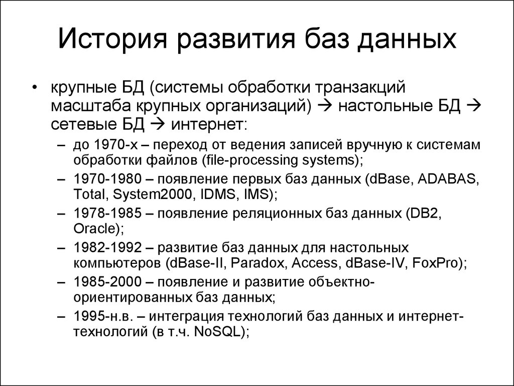
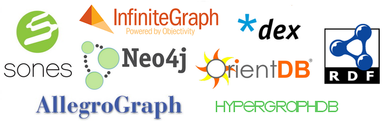
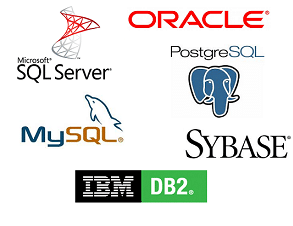
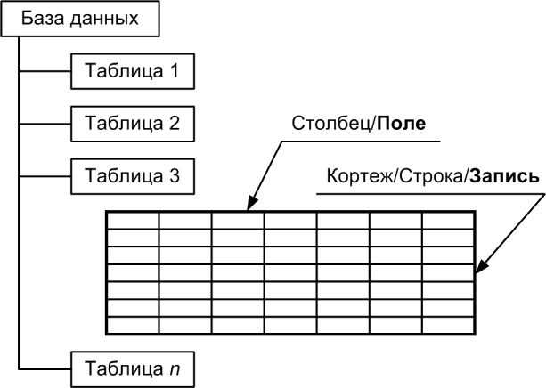
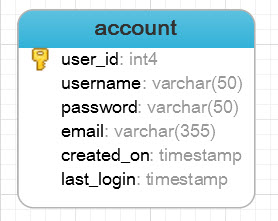
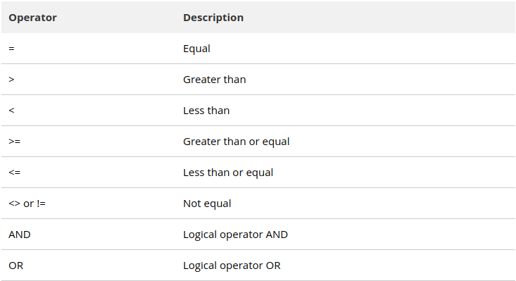

NoSQL

Функции

Под лэйблом NoSQL сейчас скрывается множество разнородных систем
.


| Год | Название | Изменения |
|---|---|---|
| 1986 | SQL-86 | Первый вариант стандарта |
| 1989 | SQL-89 | Немного доработанный вариант предыдущего стандарта. |
| 1992 | SQL-92 | Значительные изменения (ISO 9075) |
| 1999 | SQL:1999 | Добавлена поддержка регулярных выражений, рекурсивных запросов, поддержка триггеров, базовые процедурные расширения, нескалярные типы данных и некоторые объектно-ориентированные возможности. |
| 2003 | SQL:2003 | Введены расширения для работы с XML-данными, оконные функции (применяемые для работы с OLAP-базами данных), генераторы последовательностей и основанные на них типы данных. |
| 2006 | SQL:2006 | Функциональность работы с XML-данными значительно расширена. Появилась возможность совместно использовать в запросах SQL и XQuery. |
| 2008 | SQL:2008 | Улучшены возможности оконных функций, устранены некоторые неоднозначности стандарта SQL:2003[5] |
— строковые (CHAR, VARCHAR, BLOB)
— с плавающей точкой (FLOAT, DOUBLE, DECIMAL)
— целые числа, дата и время (INT, DATE, DATETIME)
CREATE TABLE table_name (
column_name TYPE column_constraint,
table_constraint table_constraint
) INHERITS existing_table_name;
CREATE TABLE account(
user_id serial PRIMARY KEY,
username VARCHAR (50) UNIQUE NOT NULL,
password VARCHAR (50) NOT NULL,
email VARCHAR (355) UNIQUE NOT NULL,
created_on TIMESTAMP NOT NULL,
last_login TIMESTAMP
);

INSERT INTO table(column1, column2, …)
VALUES
(value1, value2, …);
CREATE TABLE link (
ID serial PRIMARY KEY,
url VARCHAR (255) NOT NULL,
name VARCHAR (255) NOT NULL,
description VARCHAR (255),
rel VARCHAR (50)
);
INSERT INTO link (url, name)
VALUES
('http://www.postgresqltutorial.com','PostgreSQL Tutorial');
INSERT INTO link (url, name)
VALUES
('http://www.google.com','Google'),
('http://www.yahoo.com','Yahoo'),
('http://www.bing.com','Bing');
SELECT
column_1,
column_2,
...
FROM
table_name;

SELECT
*
FROM
customer;
SELECT
first_name,
last_name,
email
FROM
customer;
SELECT column_1, column_2 … column_n
FROM table_name
WHERE conditions;

SELECT last_name, first_name
FROM customer
WHERE first_name = 'Jamie';
SELECT last_name, first_name
FROM customer
WHERE first_name = 'Jamie' AND
last_name = 'Rice';
SELECT customer_id,
amount,
payment_date
FROM payment
WHERE amount <= 1 OR amount >= 8;
value IN (value1,value2,...)
value IN (SELECT value FROM tbl_name);
SELECT
first_name,
last_name
FROM
customer
WHERE
customer_id IN (
SELECT
customer_id
FROM
rental
WHERE
CAST (return_date AS DATE) = '2005-05-27'
);
UPDATE table
SET column1 = value1,
column2 = value2 ,...
WHERE
condition;
UPDATE link
SET last_update = DEFAULT
WHERE
last_update IS NULL;
UPDATE link
SET rel = 'nofollow';
UPDATE link
SET description = 'Learn PostgreSQL fast and easy',
rel = 'follow'
WHERE
ID = 1
RETURNING id,
description,
rel;
DELETE FROM table
WHERE condition
DELETE
FROM
link USING link_tmp
WHERE
link.id = link_tmp.id;
DELETE
FROM
link;
DELETE
FROM
link RETURNING *;